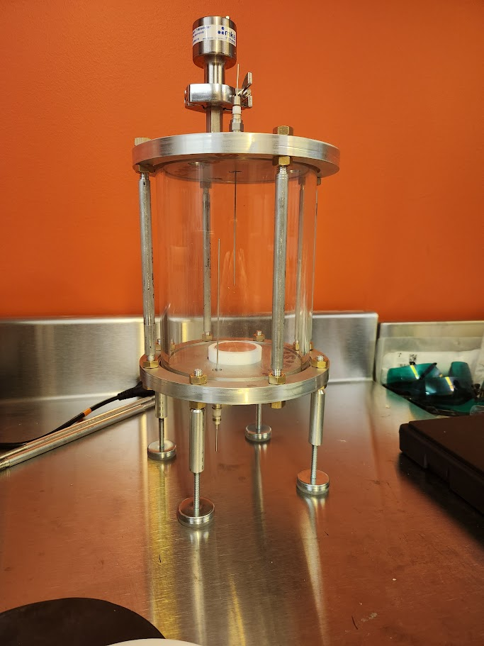

DC Sputter Deposition Chamber
Tags: 3D CAD / HackerFab / Power Electronics
← See all ProjectsIntroduction
Many industries require thin layers of materials to be adhered to surfaces to build functional devices, prostetics, and sensors. In Augest of 2024 I was approached by the design team HackerFab at the University of Waterloo to aid in the creation of a DC sputter chamber. During the development of the preliminary V0 and of the first complete version, V1, I was the mechanical design lead. As of May 2025 I have taken up an advisor role instead of a lead role on this project to focus on other projects within HackerFab.
Working Principal
A sputter deposition machine works by depositing a physical vapor of a substance onto a substrate. DC sputter chambers use a DC power source to create this physical vapor and can only deposit metals, to deposit non-metals you would need to use an RF sputterer that runs off an alternating current.
Inside the chamber is a vacuum, traditionally 10^-8 torr, and the little bit of gas laft in the chamber is argon. This argon is ionized with the DC power source, since an ionized gas has lost an electron the ionized argon has a positive charge. This positivly charged ionized argon can be manipulated with magnetic fields.
We take advantage of this property by having a set of magnets behind a very pure piece of metal (in our case Aluminium) called a target. The ionized argon will be sttracted to the magnets and constrained by their magnetic fields, crashing into the target adn disloging some metal ions and depositing them on the substrate that acts as an anode.
Argon is used for a few reason. the first reason is that it is a nobel gas, so it will not contaminate the chamber. Second it is the most plentiful and inexpensive nobel gas. Finally argon is also relativly heavy compared to another gas like helium, providing more force during the impact between the ionized argon and the target.
Sputter V0

Sputter V0 was intended to be a small start for the team gaining our bearings to make a fully fledge sputter chamber. The entire chamber was designed in roughly 3 months and machined and assembled in roughly a month for approximatly $300 CAD with help from the machinists from Ascension Automation in Cambridge, ON.


A generic form factor between the subsequent iterations of the sputter deposition chamber originated from V0. This form factor is characterized by a 5.5” borosilicate tube to see the plasma in the chamber and two plates sealed with radial sealing O-rings.
Sputter V1

Sputter V1 is the first attempt at a fully fledged sputter deposition chamber. The changes from sputter V0 to V1 include some small ease of use changes and the addition of a sputter head. This design costed roughly $1100 CAD and was machined by PCBWay and JLCPCB.

The quality of life changes stem from the major issue with V0 being the lack of ease of access of the silicon substrate inside the chamber. The raidal seals offer too much friction to allow the inside of the chamber to be easily accessed. This was resolved by having radial sealed O-rings seal the borosilicate tube to a lid ring, while the chamber lid is sealed with a face sealed O-ring.
The sputter head is responsible for the ionization and the constraining of plasma using ring and dot magnets as well as drawing the ionized argon towards the target. There were two main challenges to overcome with this version that were done hastily to prepare for the 2025 Socratica Symposium.


The first was creating vacuum sealed feedthroughs that can withstand pressure down to 10^-3 torr, this was crudly fixed by applying and curing some JB Weld and by keeping as much of the electronics intended to be applied to atmosperic pressure. This was done by keeping as many electrical and auxillerary features of the sputter head unsealed while making the sputter head sealed.


The second issue was one of temperature. It did not come up but it was heavily considered as the neodimium magnets used in the sputter head no longer create a magnetic field if they reach roughly 90°C. The Sputter head was designed in a way to allow for water cooling lines to cool the aluminium sputter head through conduction.
Next Steps


A new member of HackerFab has taken up the task of maintaining and upgrading sputter, where my role now is to offer advice. There are some key changes and upgrades that I have wanted to make that have been brough to fruition.
The first change is the addition and integration of a turbomolecular pump in order to drop the operable pressure from 10^-3 torr to 10^-8 torr.
Another change that was done was to remove the welded components and replace them with blind holes to make the repeatability of making the sputter and it's preformance more reliable.
Finally we wanted to properly add closed loop liquid cooling to keep the magnets cool. This has been done with a fishtank pump and a tupperware container of deionized water.

These incremental changes and additions, including the soon to be integration of tools like a Quartz Crystal Microbalance, have allowed our process team to start optimizing the preformance of the device. at this point in time they are getting mirror like layers of depostion on to glass microscope slides.